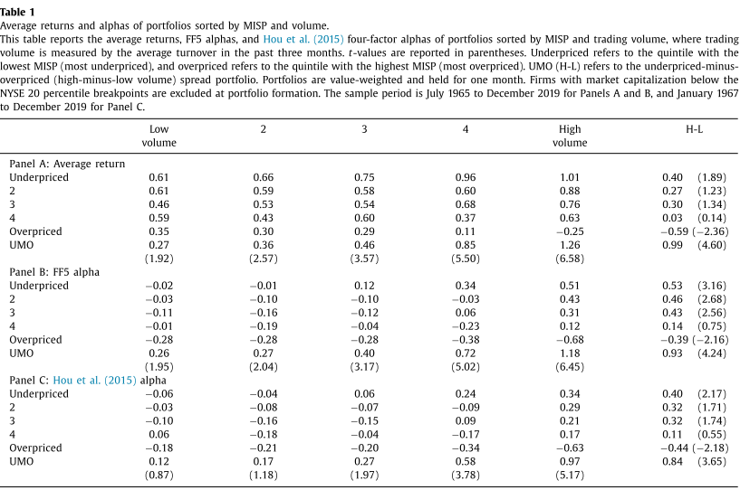
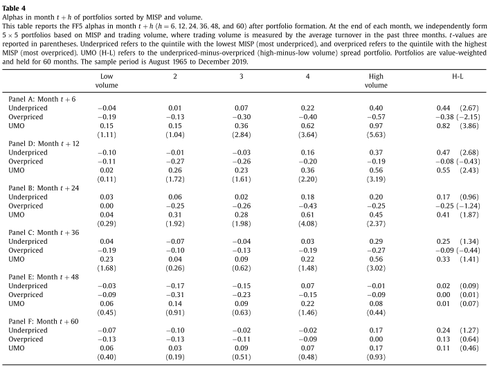
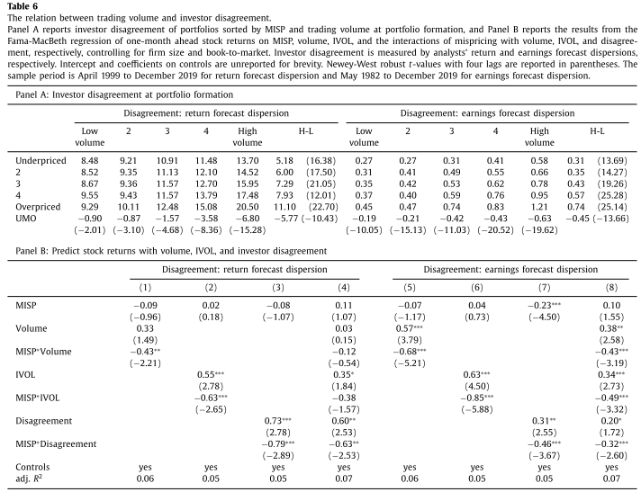

0.1 Expected Return, Volume, and Mispricing
0.1.1 摘要
本文研究发现，在高估的股票中，成交量与预期收益正相关，而在低估的股票中，成交量与预期收益正相关，表明交易量有放大错误定价的作用。采用不同的误定价和交易量度量、不同组合形成方法，并控制多个变量后，交易量放大误定价的结果仍然稳健。本研究将成交量归因于投资者意见分歧，认为投资者意见分歧预测股票收益是以预期差为条件，这与 Atmaz and Basak (2018) 最近建立的理论模型结果一致。
0.1.2 研究问题
交易量对股票市场的价格发现、风险分担和流动性供给有重要作用，由于它可能与投资者意见分歧、波动性、流动性、投资者关注、私人信息等有关，那么交易量在资产定价异象中有什么作用？其如何影响股票收益？
0.1.3 相关文献
- Cochrane (2017) 讨论了交易量都重要作用，并声称这些研究是未来资产定价革命性成果。
- Atmaz and Basak (2018) 建立了理论模型，在一只股票上同时考虑了平均预期偏差和投资者意见分歧，并将他们定义为投资者预期偏差的均值和标准差。在均衡状态下，在好消息发生后，乐观的投资者的信念得到支持，并通过对股票的投资变得相对富裕，这反过来又增加了他们在平均预期偏差中的权重，使对股票的整体看法更加乐观。相反，悲观的投资者变得更加悲观。 进一步证明了投资者意见分歧有放大平均预期偏差的作用。
- Conrad, Hameed, and Niden (1994) 发现在过去一周的亏损者中，交易量与收益存在显著的正向关系,认为这个结果与微观结构理论一致，交易量被解释为私有信息。
- 著名的零交易量理论表明，在完美的市场上，理性的投资者拥有相同的知识，交易量应该为零(Back 2010)。
- 为了解释现实市场上的交易量，传统模型假设投资者在信息和私有投资机会上是异质的(Lo and Wang 2010)。
- Novy-Marx and Velikov (2015) 和 Hou, Xue, and Zhang (2018) 研究表明，在小盘股中，套利成本是一个驱动误定价的主要因素。
- Hong and Stein (2007), Daniel and Hirshleifer (2015) 和 Barberis (2018) 认为投资者一般出于三种动机交易：流动性需求、私有信息以及由于投机或过度自信导致的意见分歧。
0.1.4 实证结果
1. 交易量对误定价的放大作用检验
为了检验成交量在误定价中扮演的作用，在每月月末，本文使用误定价和成交量两个变量进行独立双重分组，形成5
$\times$5投资组合。结果如下所示：

无论是原始收益还是风险因子模型调整收益，在在成交量高的组合内，高估股票与低估股票收益差越大，显著性也越高。

图1呈现了不同交易量组合中，高估股票与低估股票收益差，我们发现，高估股票与低估股票收益差随着成交量上升而上升，表明交易量有放大误定价的作用。
2.交易量对误定价的放大持久性检验

从交易量对误定价放大效应的持久性来看，误定价代理变量对未来股票收益率的预测性可达36个月。
3.经济解释
本文尝试着利用行为金融理论来解释交易量对误定价的放大效应。Atmaz and Basak (2018) 研究表明投资者意见分歧有放大平均预期偏差的作用，当平均偏差为正时，意见分歧与平均偏差正相关，意见分歧增加导致投资者更加乐观，意味着意见分歧与收益存在负向关系，反之则反。总之，投资者意见分歧单独不会产生误定价，但当投资者预期出现偏差时，他会放大错误定价。
(1)投资者意见分歧

虽然大量文献使用交易量代理意见分歧，但该指标并非一个干净的投资者意见分歧的代理变量，因此，本文使用分析师收益预测偏差和盈余预测偏差来反映投资者预期偏差。具体来讲，我们将t月分析师过去12个月预测的目标价格与实际价格比作为分析师预测收益，然后用分析师预测收益的标准差来度量意见分歧。
表6 Panel A报告了交易量与误定价二为组合的意见分歧，我们发现投资者意见分歧随交易量升高而上升，随着误定价上升而上升，表明投资者意见分歧有放大投资者预期偏差的作用。 Panel B报告了分析师和盈利预测偏差如何影响交易量放大效应，我们采用Fama-Macbeth回归来检验，交互项MISP和交易量的交叉项显著为负，表明意见分歧几乎吸收了交易量和特质波动效应，支持交易量对误定价的放大效用由投资者意见分歧驱使的结论。
(2)投资者预期偏差
Stambaugh, Yu, and Yuan (2015) 通过讨论投资者预期偏差研究了投资者意见分歧，发现投资者预期偏差与意见分歧由密切的联系。Livnat and Mendenhall (2006) 将预期偏差定义为实际盈余与分析师预测中位数差与股价之比。 在本部分，我们检验在低估股票经历负面消息后，预期偏差是否更可能由悲观投资者主导，这时事后的分析师预测偏差为正，并且交易量（投资者意见分歧）更大。相反，在高估的股票中，我们期望交易量越高，预测偏差越负。

表7报告了25个组合分析师预测偏差，与我们预期一致，在低估股票中，分析师预测偏差为正，相反，在高估股票中分析师预测偏差为负。这说明投资者对低估股票较为悲观，对高估股票较为乐观。而且当交易量上升时，低估股票的预测偏差为负，高估股票预期偏差为正。
进一步我们检验了预期差在时间序列上的变化。由于预期偏差是由投资者意见分歧驱使，在时间序列上有变化，所以我们预期交易量的放大效应也是时变的。我们使用Baker and Wurgler (2006) 的投资者情绪指数作为总预期偏差的代理，检验了交易量的放大效应随投资者情绪如何变动。

如表8所示，在投资者情绪高的时期，高估的股票获得较低的收益更加明显。
0.1.5 研究结论
交易量与收益的关系是资产定价的基本问题之一，是一个仍需要研究的邻域。我们发现错误定价主要集中在高交易量的股票中， 在低估的股票中，交易量与预期收益正相关，而在高估的股票中，交易量与预期收益负相关。 在经济驱动力解释上，我们认为我们的结果可以通过 Atmaz and Basak (2018) 的理论模型来解释，如果交易量捕获了投资者意见分歧并且误定价捕获了投资着预期偏差，我们的实证结果不仅有助于调和现有文献研究的争议，而且还超越了 Atmaz and Basak (2018) ，我们号召建立新的资产定价模型来更具体地分析交易量、错误定价、IVOL和其他经济变量的作用，以丰富我们对交易量-收益关系的理解。